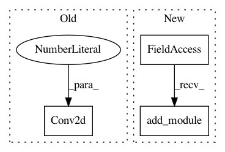

54d89c639d8d6d72e5ada833c00762b82ba63348,implementations/bicyclegan/models.py,Discriminator,__init__,#Discriminator#Any#,131
Before Change
self.d1 = nn.Sequential(
*downsample_block(in_channels, 64, False),
*downsample_block(64, 128, True),
nn.Conv2d(128, 1, 3, 1, 1)
)
self.d2 = nn.Sequential(
*downsample_block(in_channels, 64, False),
*downsample_block(64, 128, True),
After Change
// Extracts three discriminator models
self.models = nn.ModuleList()
for i in range(3):
self.models.add_module("disc_%d" % i,
nn.Sequential(
*discriminator_block(in_channels, 64, normalize=False),
*discriminator_block(64, 128),
*discriminator_block(128, 256),
*discriminator_block(256, 512),
nn.Conv2d(512, 1, 3, padding=1)
)
)
self.downsample = nn.AvgPool2d(in_channels, stride=2, padding=[1, 1], count_include_pad=False)
def compute_loss(self, x, gt):
In pattern: SUPERPATTERN
Frequency: 3
Non-data size: 3
Instances
Project Name: eriklindernoren/PyTorch-GAN
Commit Name: 54d89c639d8d6d72e5ada833c00762b82ba63348
Time: 2018-05-26
Author: eriklindernoren@gmail.com
File Name: implementations/bicyclegan/models.py
Class Name: Discriminator
Method Name: __init__
Project Name: Cadene/pretrained-models.pytorch
Commit Name: b2074ddf9d8bc2069d66976fea58a52f40238496
Time: 2017-11-16
Author: remi.cadene@icloud.com
File Name: pretrainedmodels/nasnet.py
Class Name: Cell0
Method Name: __init__
Project Name: osmr/imgclsmob
Commit Name: 395b1fc3df754c21a6b7aebc79a1d950bfdc1efc
Time: 2018-10-29
Author: osemery@gmail.com
File Name: pytorch/pytorchcv/models/darknet.py
Class Name: DarkNet
Method Name: __init__